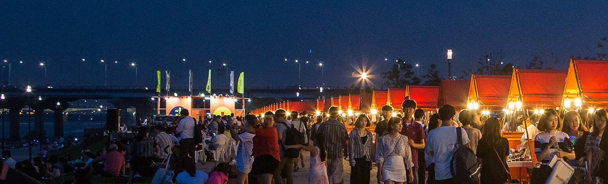
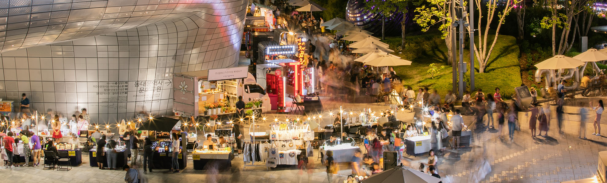

시민과 함께 만드는 서울의 새로운 문화
서울밤도깨비야시장은 서울의 명소가 가진 공간의 매력을 극대화시켜
밤도깨비들과 함께 떠나는 새로운 서울형 야시장을 연출합니다.
문화융합형 프로그램을 마련해 상인과 고객, 문화를 잇는 새로운 장터 축제를 만들고
고객은 생산자가 직접 판매하는 미래형 장터와 Only one 상품을 체험하고 소비할 수 있습니다.
지속적으로 진화하는 상단은
창업 인큐베이팅 시스템을 통해 청년 상인의 새로운 모델을 구축합니다.
경관과 문화, 특화된 상품과 상인, 운영시스템을 통해
서울밤도깨비야시장은 서울의 밤을 바꾸는 신개념 야시장 브랜드로 나아갑니다.

창업 인큐베이팅 시스템까지 서울형 야시장
도깨비 시장은 도매, 비밀 판매 등이 일어나는
비상설 시장 형태의 도떼기 시장에서 비롯되었습니다.
도깨비 시장이라는 말은 서울 황학동과 방학동 등의
재래시장 상권에서는 오래 전부터 익숙한 단어였습니다.
‘서울밤도깨비야시장’은 밤이면 열렸다가 아침이면 사라지는 도깨비 같은 시장이라는 의미로
특정한 시간이 되면 새로운 공간, 새로운 장이 열린다는 콘셉트를 가지고 있습니다.
